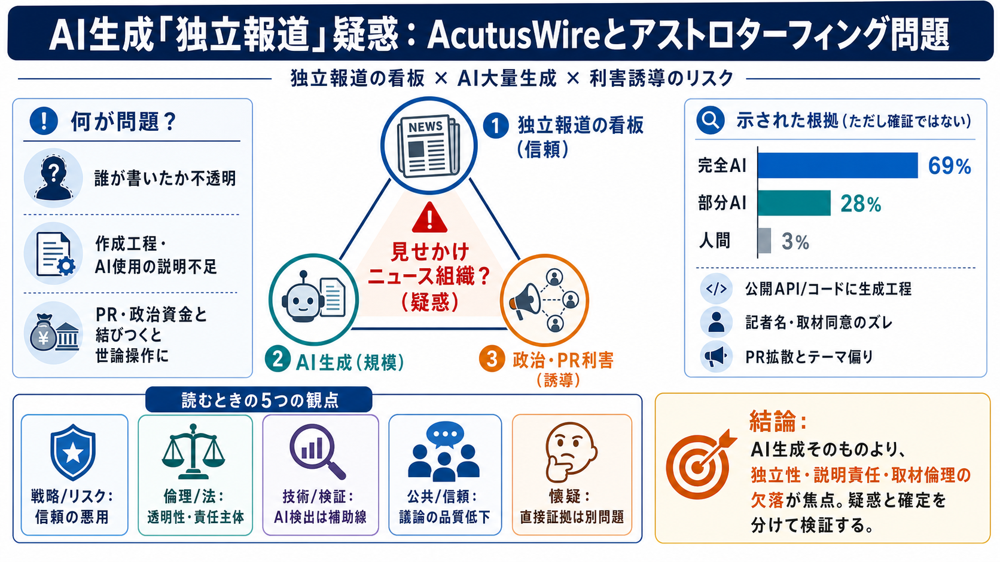

An OpenAI-linked news outlet appears to be entirely AI-generated | Mashable
The deeper Johnston dug, the clearer the picture got. As a new site with very little social media presence, articles by …

The deeper Johnston dug, the clearer the picture got. As a new site with very little social media presence, articles by …
Even more strangely, Model Republic‘s reporting also unearthed eyebrow-raising links between Acutus and OpenAI, one of t…
The email itself, which came from a generic reporters@acutuswire.com email address, was flagged as AI-generated by the d…
For the second time this month, we found links to Targeted Victory, the firm at the center of OpenAI's $125 million poli…
A news site called The Wire by Acutus has been sending AI agents to interview experts while posing as human reporters.